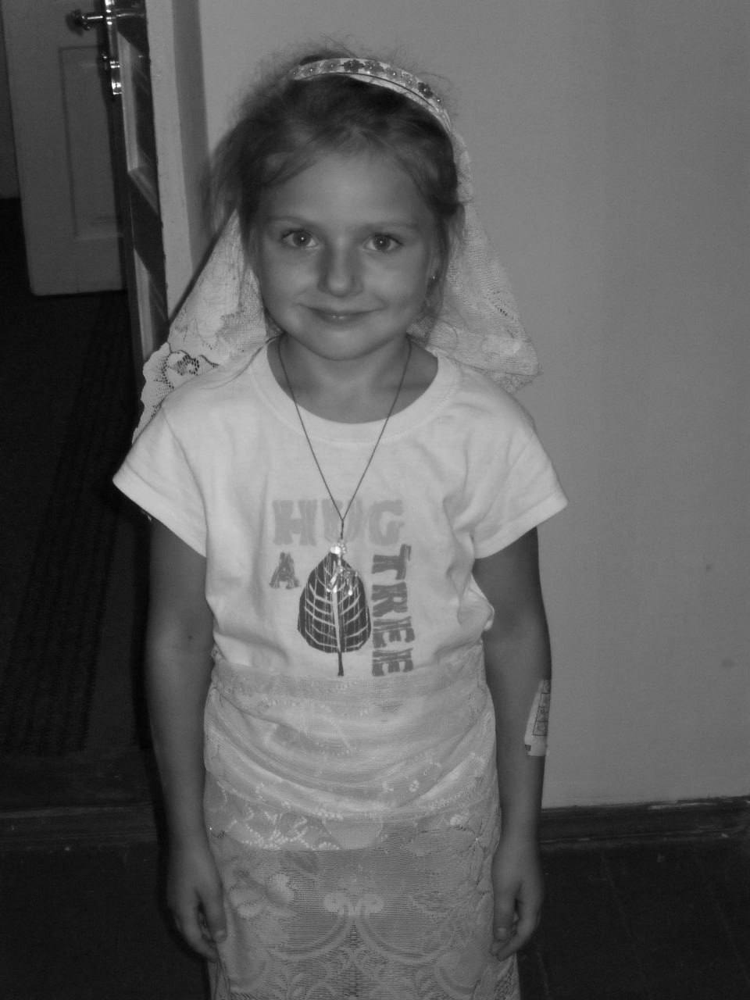
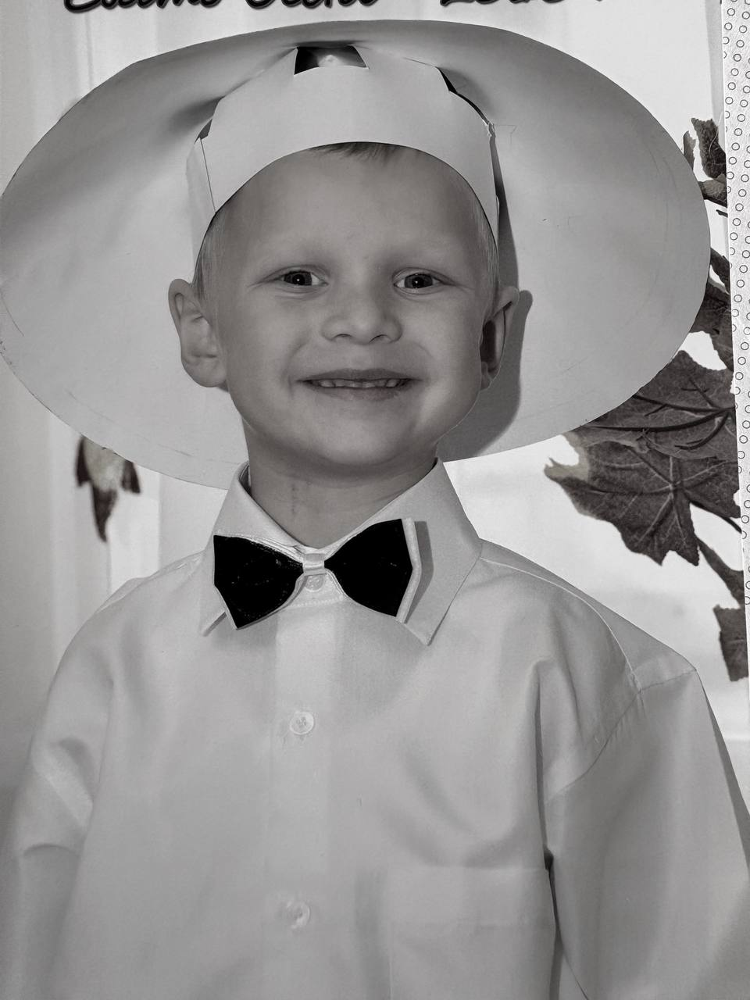
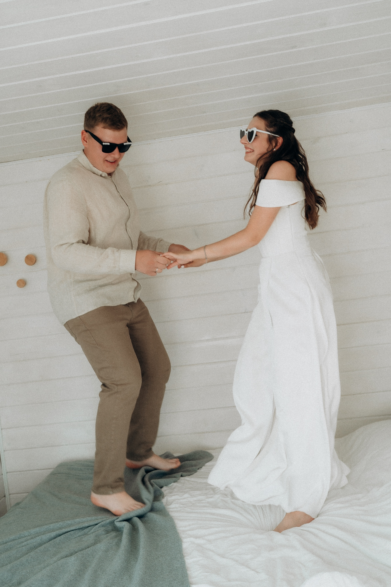

Як все починалось...
Ми виросли, змінилися, але зберегли головне — здатність мріяти та любити. Запрошуємо вас поринути у наші найтепліші спогади та розділити з нами цей особливий день.

Такою була я...

...і таким був Він

...а тепер ми пишемо спільну історію
Чекаємо на вас
Обіцяємо багато обіймів, сліз радості та найсмачніший торт.
Коли
22 травня 2027 року
Вінчання о 13:00
Бенкет о 14:30
Вінчання
у церкві Пресвятої Трійці
вул. Петра Адермаха, 1, Щирець
Святкування
у ресторані «Острівок»
вул. Острівська, 193, Щирець
Програма дня
Зберігайте розклад, щоб не пропустити найважливіші моменти нашого свята.
Вінчання
Церква Пресвятої Трійці
вул. Петра Адермаха, 1, Щирець
Святковий бенкет
Зустріч гостей у ресторані «Острівок»
вул. Острівська, 193, Щирець
Перший танець
Офіційне відкриття танцювального майданчика
Весільний торт
Солодке завершення вечора та теплі розмови
Маленькі деталі
Кілька теплих прохань, які допоможуть зробити свято затишним, легким і сповненим яскравих спогадів.
Ваша присутність
Будь ласка, заповніть невеличку анкету до 1 травня 2027 року, щоб ми могли все ідеально спланувати для вашого комфорту.
Заповнити анкету